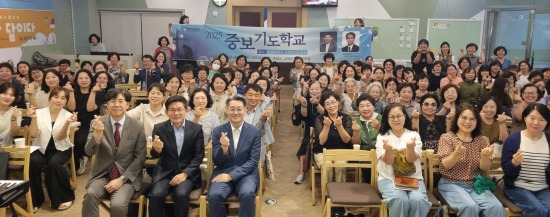
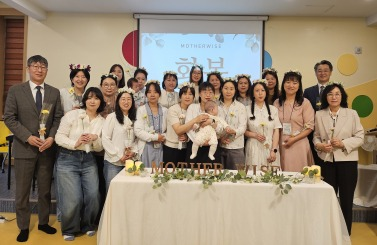
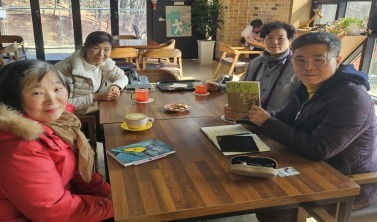

양육 & 훈련

중보기도팀
중보기도팀은 훈련을 이수한 약 130명의 중보기도자들이 함께하는 기도 공동체로, 교회와 목회자, 선교지와 선교사, 성도, 지역사회와 나라를 위해 지속적으로 기도하는 사역팀입니다.
중보기도 사역 안내
(1) 매월 연합중보기도회 (2) 365 정오기도 (3) 소그룹 중보기도 (4) 119 긴급기 (5) 중보기도학교 (6) 중보기도세미나
(1) 매월 연합중보기도회 (2) 365 정오기도 (3) 소그룹 중보기도 (4) 119 긴급기 (5) 중보기도학교 (6) 중보기도세미나

마더와이즈
삶의 다양한 관계(결혼, 출산, 육아) 안에서 어머니들을 가정과 교회에서 성숙하게 세워주는 말씀 양육 프로그램입니다.
좌안내
1) 시간: 매주 목요일 오전 10~12시
2) 장소: 교육관 2층 초등부실
3) 대상: 자녀를 둔 어머니
1) 시간: 매주 목요일 오전 10~12시
2) 장소: 교육관 2층 초등부실
3) 대상: 자녀를 둔 어머니
바이블스쿨
"바이블스쿨은 매년 1회 또는 2회 약 8~10주간 진행되는 집중 성경공부 프로그램입니다. 성도가 꼭 알아야 하거나 알기를 원하는 과목을 개설합니다."
- 기간: 매년 봄 또는 가을 8~10주간, 주중 낮 또는 저녁
각 과목마다 주중 낮반과 저녁반을 개설하여 참여도를 높이고 있습니다.
각 과목마다 주중 낮반과 저녁반을 개설하여 참여도를 높이고 있습니다.

음악문화교실
음악문화교실은 상반기와 하반기로 나누어 각 학기 16주 과정으로 운영되는 문화·교육 사역 프로그램입니다.
- 음악교실 (클래식/실용음악): 첼로/플롯/성악/피아노/바이올린/클라리넷/신디/기타/드럼/우쿨렐레
- 문화교실: 독서교실 / 연필스케치
- 문화교실: 독서교실 / 연필스케치